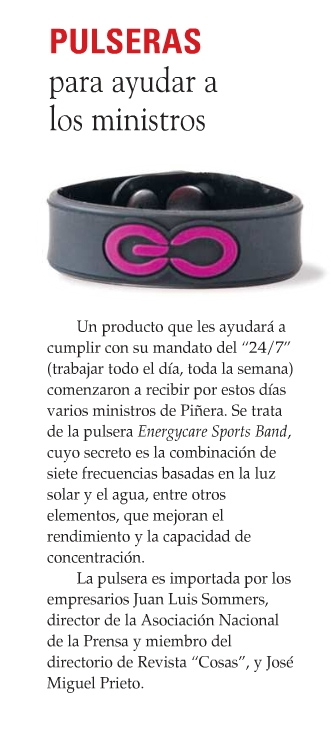

Las pulseras mágicas de los ministros
Hace un par de años nos quejábamos del analfabetismo digital de un ministro, ahora parece que estamos ante una situación peor. Leo en el blog de Luis Ramirez esta perla:

¿No les preocupa que nuestras autoridades caigan en estas muestras de ignorancia?
Y antes que me salgan con la explicación, seudo científica, de las propiedades de las 7 frecuencias en el holograma de la pulserita famosa, permítanme transcribir esta explicación, tomada de este post sobre los fundamentos seudo científicos de este aparatito mágico:
¿Estos señores de Power Balance saben que demonios es una frecuencia?. Según ellos, parece que la “frecuencia” es algún tipo de emisión beneficiosa, algo así como una “energía”, pero más moderna. Algo que además se puede “incrustar” en un holograma, ahí es nada...
Pues va a ser que no. La “frecuencia” no es ninguna emisión ultratecnológica. La frecuencia simplemente es una magnitud física, que señala la tasa de repetición de un fenómeno en una unidad de tiempo. Así, podemos decir que la frecuencia cardiaca de un humano sano es de 60 a 80 pulsaciones por minuto, que meteoritos de un metro de diámetro chocan contra la Tierra con una frecuencia de uno al año o que el motor de un vehículo se mueve a 4.000 revoluciones por minuto.
La fórmula general para calcular la frecuencia de un evento consiste en medir el tiempo entre dos repeticiones y hallar su inverso:

De esta forma, si un evento se repite cada 0,5 segundos, su frecuencia será 1/0,5 = 2 ciclos por segundo.
...
En el caso de las ondas (como las ondas en el agua, aire o la radiación electromagnética), la frecuencia es el número de oscilaciones (vibraciones completas) que efectúa cualquier partícula, del medio perturbado por donde se propaga la onda, en un segundo. Una vibración rápida corresponde a una frecuencia elevada, mientras que una vibración lenta corresponde a una frecuencia baja.


¿Que significa entonces eso de “incrustar una frecuencia”? Pues evidentemente, una total incorrección, por no decir un completo disparate, equivalente a “incrustar una longitud” o “incrustar un volumen”. Cuando decimos que algo “emite una frecuencia”, en realidad lo que se emite es una radiación, un sonido o una vibración de cualquier tipo, la cual tendrá unas características determinadas: una amplitud, una longitud de onda y una frecuencia.
Por eso, no se pueden emitir o grabar frecuencias “a secas”, de igual forma que no se pueden emitir o grabar longitudes o volúmenes “a secas”.
Niños ¡aprendan ciencia, así no los engañarán con toda esta charlatanería!
La verdad es que estas pulseras y los que las venden deberían ser denunciados por fraudes a las autoridades... no wait!